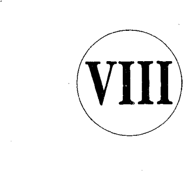

“Benim yazılarımdan hiçbir şey olacağı yok,” dedi kısık sesle. “Herkes romanlarımı çok beğeniyor, ama o kadar. Bu yüzden gazetedeki işimde çalışmayı sürdürüyorum. En azından faturalarımı ödeyebiliyorum. Başka bir öneriniz mi var?” “Evet, var,” dedim heyecanla. “Singapur’da bir arkadaşım açtığı okulda insanlara satış yapmayı öğretiyor. Singapur’un en iyi kurumlarına satış kursları veriyor. Kanımca bu kurslardan birine katılırsanız kariyeriniz için çok faydalı olacaktır.” Oturduğu yerde kaskatı kesildi. “Şimdi siz bana satış yapmayı öğrenmek üzere okula gitmemi mi söylüyorsunuz?” Kafa salladım.
“Ciddi değilsiniz herhalde?”
Ciddiyim anlamında bir kez daha kafa salladım. “Sizce bunda bir yanlışlık mı var?” Geri adım atıyordum. Muhabir bir şeye içerlemişti; içimden, keşke bu konuyu hiç açmasaydım, diye geçiriyordum. Yardımcı olayım derken kendimi savunacak duruma düşmüştüm.
“İngiliz Edebiyatında yüksek lisans yaptım. Satıcı olmayı öğrenmek için neden okula gideyim? Ben bir profesyonelim. Satıcı olmak zorunda kalmayayım diye bunun okulunu okudum ben. Satıcılardan nefret ederim. Tek istedikleri paradır. Şimdi neden kalkıp satıcılık okuyayım?” Evrak çantasını toplarken sinirliydi. Röportaj sona ermişti. Sehpanın üstünde daha önce çok satanlar listesine giren
201
downloaded from KitabYurdu.org
bir kitabım duruyordu. Not kâğıtlarıyla birlikte onu da elime alıp muhabire uzatırken, “Bunu görüyor musun?” diyerek karaladığı notları işaret ettim.
Göz ucuyla baktı. “Neyi?” diye sorarken k afası karışmıştı. Bir kez daha kendi tuttuğu notları işaret ettim. Şöyle yazmıştı: “Robert Kiyosaki, en iyi satan yazar.” “Bak, ‘en iyi satan yazar’ diyor, en iyi ‘yazan’ yazar değil.” Gözleri fal taşı gibi açıldı.
“Ben berbat bir yazarım. Sen büyük bir yazarsın. Ben sa - tıcılık okulunda okudum. Sen yüksek lisans sahibisin. Bunları birleştir, karşında bir ‘en iyi satan yazar’ bir de ‘en iyi yazan yazar’ olduğunu göreceksin.”
Gözleri öfkeyle parladı. “Satmayı öğrenmek için asla o kadar alçalmayacağım. Sizin gibilerin yazı yazmaya hakkı yok. Ben profesyonel olarak yazma eğitimi almış biriyim, sizse satıcısınız. Bu adil değil.”
Kâğıtlarını çantasına tıkıştırdıktan sonra kalktı, koşar adım geniş cam kapılardan telaşla çıkıp Singapur’un nemli sabahında uzakl aştı.
Yine de, ertesi sabah çıkan makalesinde benim hakkımda dürüst ve güzel şeyler yazmıştı.
Dünya uyanık, becerikli, eğitimli ve doğuştan yetenekli kişilerle dolu. Onlarla her gün burun buruna geliriz. Çevre - mizde yaşarlar.
202
downloaded from KitabYurdu.org
Birkaç gün önce arabam arıza yaptı. Bir tamirciye gittim, genç tamirci birkaç dakikada sorunu çözdü. Motorun sesini dinlemek arızanın kaynağını anlamasına yetmişti. Ağzım açık kaldı.
Acı gerçek şu ki büyük yetenek yeterli değildir.
Yetenekli kimselerin ne kadar az para kazandıklarına hep şaşırırım. Geçen gün 100 bin dolar kazanan Amerikalıların oranının yüzde 5’in altında olduğunu duydum. Yıllık geliri 20 bin doların altında olan zeki, yüksek eğitimli kimseler tanırım. Tıp malzemeleri alım satımı konusunda uzman olan bir danışman bana doktorların, diş doktorlarının ve fizik tedavi uzmanlarının maddi zorluklar yaşadıklarını anlattı. Oysa ben onların okuldan mezun oldukları anda ceplerinin dolar larla dolduğunu sanırdım. Danışman dostum durumu şöyle özetledi: “Büyük servetin bir adım uza ğındalar.”
Bunun anlamı şu, çoğu insan becerilerine bir tane daha eklerse gelirini büyük oranda artırmayı başarabilir. Daha önce de belirtmiştim, finansal zekâ muhasebecilik, yatırımcılık, pazarlamacılık ve hukukun sinerjisidir. Bu dört teknik beceriyi birleştirirseniz, paradan para kazanmak daha kolaydır. Para söz konusu olduğunda, çoğunluğun bildiği tek çözüm yolu çok çalışmaktır.
Muhabirlik yapan genç bayan yazar becerilerin
203
downloaded from KitabYurdu.org
sinerjisine, yani birbirini güçlendirmesine güzel bir örnektir. Eğer satış ve pazarlama becerisini de öğrenseydi, geliri korkunç bir şekilde artacaktı. Onun yerinde olsaydım, satıcılıktan başka telif haklarının tanıtımıyla ilgili kursa da giderdim. Reklamcılık şirketinde iş arardım. Maaşı daha düşük bile olsa başarılı reklamcılıkta işe yarayacak ‘kestirmeler’ öğrenirdim. Aynı zamanda halkla ilişkiler alanında kendimi geliştirmeye bakardım; bu da önemli bir yetenek. Bedelsiz tanıtımla kitlelere ulaşmayı öğrenirdim. Gecelerimi ve hafta sonlarımı da büyük bir roman yazmaya adardım. Son noktayı koyduğumda, kitabı satabilme imkânım daha çok olurdu. Zaten çok geçmeden ‘en iyi yazan yazar’ olurdum.
If You Want To Be Rich and Happy, Don’t Go to School? (Zengin ve Mutlu Olmak İstiyorsanız, Okula Gitmeyecek misiniz?) adlı ilk kitabımla bir yayınevinin kapısını çaldığımda bana kitabın adını Eğitim Ekonomisi olarak değiştirmemi önerdi. Böyle bir isimle, toplam kitap satışının iki kitabı geçmeyeceğini söyledim; biri aileme, biri en iyi arkadaşıma. Hem de parasını vermeye yanaşmazlardı. Zengin ve Mutlu Olmak İstiyorsanız, Okula Gitmeyecek misinizi gibi tutarsız bir başlığı seçmekteki amacım kitlelerin dikkatini ilk bakışta çekecek olmasıydı. Eğitim yanlısı biriyim, üstelik eğitimde reform yapılması
204
downloaded from KitabYurdu.org
gerektiğine inanırım. Aksi takdirde, modası geçmiş eğitim sitemimizin değişmesi gerektiğini neden dilime pelesenk edeyim? Kitabın adını koyarken 'EV ve radyo programlarına çıkmamı sağlayacak bir başlık seçtim; nedeni basit, aykırı biri olarak görülmek istiyordum. Çoğu kimse boşa kürek çektiğimi düşündü, fakat kitap sattıkça sattı. Amerikan Deniz Ticaret Akademisi’nden 1969 yılında mezun olduğumda, eğitimli babam sevinçten havalara uçu - yordu. California’daki Standard Oil şirketi tanker filosunda bana iş verdi. Üçüncü kaptandım, sınıf arkadaşlarıma gör e maaşım düşük olsa da okuldan sonra bulduğum ilk gerçek iş için fena sayılmazdı. Başlangıçta, fazla mesailer dahil, yılda 42 bin dolar alacak, ama yılda yedi ay çalışacaktım. Yıllık izin sürem beş aydı. İstersem Vietnam’a gider, şirketin yan kuruluşlarından birinde çalışır ve izin yapmak yerine gelirimi ikiye katlayabilirdim.
Önümde parlak bir gelecek uzanıyordu, ancak altı ay sonra istifamı verdim ve Deniz Piyadegücü’ne girerek uçmayı öğrendim. Eğitimli babamı allak bullak etmişti bu kararım. Zengin babaysa beni tebrik etti.
Gerek okulda gerek işyerinde, ‘uzmanlaşma’ fikri revaçtadır. Diğer bir deyişle, daha çok para kazanmak ya da terfi etmek için ‘uzmanlaşmak’ gerek. İşte bu yüzden, tıp doktorları mezun olur olmaz ortopedi ya da pediatri gibi
205
downloaded from KitabYurdu.org
alanlarda uzmanlaşmaya can atarlar. Aynısı muhasebeciler, mimarlar, avukatlar, pilotlar ve başka meslek grupları için de geçerli.
Eğitimli babam da aynı dogmaya sarılmıştı. Sonunda doktorasını aldığında duyduğu büyük mutluluğun nedeni buydu. Okulların daha az konuda daha çok çalışan kişileri ödüllendirdiğini dilinden düşünmezdi.
Zengin baba bunun tam tersini yapmamı salık verdi bana. “Çok şey hakkında az şey bilmelisin,” diye öğütlerdi. İşte bu yüzden yıllar boyu onun şirketlerinin farklı bölümlerinde çalıştım. Bir ara muhasebe departmanında görev aldım. Muhasebeci olmak gibi bir niyetim olmamasına rağmen ‘osmoz’, ‘geçişme’ yoluyla öğrenmemden yanaydı. Zengin baba terminolojiyi ve önemli olanla olmayanı birbirinden ayırt etme yi öğreneceğimi düşünüyordu. Komilik, inşaat işçiliği de yap -
tım, ayrıca satış, rezervasyon ve pazarlama
departmanlarında çalıştım. Zengin babanın amacı Mike’la beni yetiştirmekti. Aynı nedenle bankacılarla, avukatlarla, muhasebecilerle, simsarlarla yaptığı toplantılara katılıp onları dinlememizi isterdi. Kurduğu imparatorluğun her yönü hakkında biraz fikir edinmemiz önemliydi.
Standard Oil şirketindeki yüksek ücretli işimden
206
downloaded from KitabYurdu.org
ayrıldığımda eğitimli babam bana darıldı. Ne yapacağını bi - lemiyordu, şaşkındı. Yüksek maaş, büyük ikramiyeler, bol yıllık izin ve terfi olanakları sunan bir işi bırakma kararım kafasına yatmamıştı. Bir akşam, “Neden istifa ettin?” diye sorunca ne kadar uğraştıysam da ona anlatmayı başaramadım. Benim mantığımla onunki uyuşmuyordu. En büyük sorun mantığımın zengin babanınki gibi işlemesiydi. Eğitimli babam için iş güvencesi her şeyden önde gelirdi. Zengin babaysa önceliği öğrenmeye veriyordu.
Eğitimli babam gemi kaptanı olmak için okula gittiğimi sanmıştı. Zengin babaysa uluslararası ticareti öğrenmek için okuduğumu biliyordu. Daha öğrenciyken, Uzakdoğu’ya ve Güney Pasifik’e giden kargo gemilerinde, büyük yük gemilerinde, petrol tankerlerinde ve yolcu gemilerinde çalıştım. Zengin baba Avrupa’ya doğru demir alan gemiler yerine Pasifik bölgesinde kalmamın önemini vurguluyordu; ne de olsa ‘gelişen uluslar’ Avrupa’da değil, Asya’daydı. Mike da aralarında olmak üzere sınıf arkadaşlarımın çoğu kendi aralarında partiler verirken ben Japonya, Tayvan, Tayland, Singapur, Hong Kong, Vietnam, Kore, T ahiti, Samoa ve Filipinler’de ticaret, iş şekilleri, halk ve kültürleri etüt ediyordum. Ben de partideydim ama bir arkadaşımın evinde değil. Hızla büyü yordum.
Eğitimli babam neden işimi bırakıp Deniz
207
downloaded from KitabYurdu.org
Piyadegücü’ne katıldığımı anlamamıştı. Ona uçak kullanmayı öğrenmek istediğimi söylemiştim, oysa asıl istediğim askeri güçlere kumanda etmesini öğrenmekti. Zengin baba bir şirket işletmenin en zor yanının insanları idare etmek olduğundan söz ediyordu. Orduda üç yıl geçirmişti; eğitimli babam askerlikten muaf tu tulmuştu. Zengin baba adamları tehlikeli durumlara yönelt meyi öğrenmenin değerini vurguluyordu. “Bundan sonra öğ - renmen gereken liderlik,” diyordu. “Eğer iyi bir lider değil - sen, sırtından vurulursun; işyerinde de farklı değildir.” 1973’te Vietnam’dan döndüğümde, uçak kulla nmayı çok sevmeme rağmen istifamı verdim. Xerox’da işe girdim. Orada çalışmak istememin bir tek nedeni vardı, ama bu neden sağlanan yan gelirler değildi. Utangaç biriydim, satış yapma fikri dünyanın en ürkütücü konusuydu. Xerox Amerika’daki satış eğitimi programlarının en iyilerinden birine sahip.
Zengin baba benimle gurur duyuyordu, eğitimli babam ise utandı. Entelektüel biri olarak satıcıları küçük görürdü. Xerox’da dört yıl boyunca çalışıp evlerin kapısını çalma ve geri çevrilme korkumu yendim. Satış ekibindeki ilk beşin arasına girer girmez istifa ettim, eşsiz bir şirkette bütün olanakları geri teperek kendi yoluma gittim.
1977 yılında ilk şirketimi kurdum. Zengin baba Mike’la
208
downloaded from KitabYurdu.org
beni şirket sorumluluğunu üstlenmek üzere yetiştirmişti. Şimdi sıra şirketler kurmaya ve onları bir araya getirmeye gelmişti. İlk ürünüm olan naylondan, cırt cırdı cüzdanlar Uzakdoğu’da imal edildi ve New York’ta, eskiden okuduğum okulun yakınlarındaki bir depoya nakledildi. Eğitimim sona ermişti, artık havalanıp kanat çırpması nı
deneyebilirdim. Başaramazsam, tepetaklak yere
çakılacaktım. Zengin baba otuz yaşına gelmeden iflas etmenin yararından söz ediyordu. “Kendini toparlayacak vaktin olur,” diyordu. Otuzuncu doğum günüme bir gün kala, Kore’den gelecek ilk parti malım New York’a doğru yola çıktı.
Bugün uluslararası ticaretle uğraşıyorum. Zengin baba - mın bana öğütlediği gibi, gelişmekte olan uluslarla ilgileni - yorum. Yatırım şirketim şimdilik Güney Amerika, Asya, Norveç ve Rusya’daki yatırım olanaklarını değerlendiriyor. “İş ‘İflas Şimdiden’ deyişinin kısaltmasıdır,” diyenler var. Ne yazık ki milyonlarcası için geçerli bu. Okullar finansal zekânın zekâyla ilgisini kabul etmediklerinden, işçilerin çoğu ‘ayaklarını yorganlarına göre uzatır.’ Çalışır ve faturalarını öder.
Bir başka korkunç yönetim teorisi de şudur: ‘İşçiler işten atılmayacak kadar çok çalışır, patronlar onları istifaya zorlayacak kadar ücret öder.’ Pek çok şirketin ücret
209
downloaded from KitabYurdu.org
bordrosuna bakarsanız, dediklerimde doğruluk payı olduğunu göreceksi niz.
Kesin sonuç işçilerin oldukları yerde saymalarıdır. Kendilerine öğretileni yerine getirmekle yetinirler: “Sağlam bir iş bul.” İşçiler daha çok onları kısa vadede ödüllendirecek ücret ve ikramiye için çalışır; ancak, çoğu zaman, uzun vadede sonuç felaket olur.
Benim gençlere önerim, ne öğreneceklerinden çok kendilerine bir şeyler öğretecek işler aramaları. Belli bir meslekte karar kılmadan ve ‘fare yarışı’na tutsak olmadan önce, ne tür beceriler edinmek istediklerine karar vermeleri. Kişi bir kez ömür boyu fatura ödeme kısırdöngüsüne ka - pıldı mı, ufak metal tekerlekleri döndüren küçük sıçanlardan farkı kalmaz. Minik tüylü bacakları hızla döner, tekerlek hızla döner. Fakat ertesi gün gelip bir daha baktığınızda hâlâ o kafeste olurlar: Ne büyük iş!
Tom Cruise’un başrolü oynadığı Jerry Maguire filminde pek çok büyük söz edilir. Belki de en çok akılda kalanı şudur: “Bana parayı göster.” Ancak bana en gerçekçi gelen başka bir konuşma var. Tom Cruisein firmadan ayrılırken ettiği söz. İşten atılmış, bütün şirkettekilere şu soruyu yöneltiyor: “Kim benimle gelmek ister?” Ama herkes suskun, adeta donup kalmış. Kadının biri konuşuyor yalnızca, “Gelmek isterdim ama üç aya kadar terfi
210
downloaded from KitabYurdu.org
ediyorum,” diyor.
Filmin başından sonuna kadar söylenen en gerçekçi söz bu belki de. Faturalarını karşılamak üzere çalışan insanların kullandıkları türden bir söz. Eğitimli babam her yıl alacağı zammı dört gözle bekler, her yıl hayal kırıklığına uğrardı. O zaman da, bir zam daha alabilmek uğruna, niteliklerine bir yenisini eklemek üzere yeniden okula yazılır, ama sonuç yine hayal kırıklığı olurdu.
Şunu herkese sorarım: “Bu günlük fâaliyet sizi nereye götürüyor?” Tıpkı kafesteki kobay gibi, onlar da çok çalışmanın kendilerini nereye götürdüğüne bakıyorlar mı acaba, diye merak ederim. Gelecekte onları neler beklemektedir?
Amerikan Emekliler Derneği eski Başkanı Cyril Brickfıeld
“özel emeklilik haklarının karmakarışık” olduğunu bildiriyor, “Bir kere, günümüzdeki işgücünün yarısı emeklilik haklarından yoksun. Tek başına bu bile kaygı verici. Geri kalanın yüzde 75-80 kadarı ayda 55 dolar, 150 ya da 300 dolar gibi yetersiz miktarda emeklilik ikramiyesi alıyor.”
The Retirement Myth, Emeklilik Efsanesi adlı kitabında Craig S. Karpel şöyle yazar: “Ülkenin en büyük emeklilik danışmanlık firmasını ziyaret ettim ve üst düzey yöneticiler
211
downloaded from KitabYurdu.org
için şık emeklilik programları hazırlamakta uzman olan şirketin genel müdürüyle tanıştım. Bu hanıma köşebaşlarını tutmayan kimselerin emeklilikte nasıl bir gelir bekleyebileceklerini sorduğumda, kendinden emin bir gülümsemeyle aldığım yanıt şuydu: ‘Gümüş Mermi’. “Nedir bu ‘Gümüş Mermi?”’ diye sordum.
“Omuz silkti. ‘Eğer bebek fabrikaları yaşlandıklarında yeterince paraları olmayacağını fark ederlerse, beyinlerini yerler’ dedi.” Karpel, daha sonra eski usul emeklilik programlarıyla ondan daha riskli olan yeni 401K gereği yasalaşan programlar arasındaki farkı açıklıyor. Bugünün çalışan insanları için hiç de hoş bir tablo değil çizdiği. Unutmayın, yalnızca emeklilikten söz ediyoruz. T abloya sağlık hizmetlerini, huzurevlerini de eklediğimizde, her şey daha da iç karartıcı. 1995 yılında yayınlanan kitabında Karpel, huzurevi ücretlerinin yılda 30 bin ile 125 bin dolar arasında değiştiğine değiniyor. Yaşadığı yöredeki sıradan huzurevlerindeki yıllık ücret 1995’te 88 bin dolar. Ülkedeki hastanelerin çoğunun önünde alınması gereken zor kararlar çoktandır var. “Kim yaşayacak, kim ölecek?” Bu kararları verirken dikkate aldıkları tek husus, hastanın ne kadar parası olduğu ve yaşı. Eğer hasta yaşlıysa, daha genç bir hastaya bakmayı yeğliyorlar. Yaşlı yoksul hasta öncelik sırasının en sonuna itiliyor. Nasıl daha iyi eğitim koşullarını
212
downloaded from KitabYurdu.org
karşılayabildiler zenginlerse, sınırlı serveti olanlar ölürken sağ kalmayı başaranlar da yine zenginler olacak.
Merak ediyorum, acaba işçiler geleceğe mi bakarlar, yoksa nereye gittiklerim sorgulamaksızın bir sonraki maaş çeklerini mi iple çekerler?
Ne zaman daha çok para kazanmak isteyen yetişkin kim - selerle konuşsam, onlara hep aynı şeyi salık veririm. Yaşantılarını uzun vadeli düşünmelerini öneririm. Yalnızca para ve güvence adına çalışmak yerine, ki bunların önemi yadsınamaz, ikinci bir yetenek öğrenmelerini sağlayacak ikinci bir iş bulmalarını söylerim. Eğer diledikleri kendilerini satış konusunda yetiştirmekse, geniş bir ağ kurmuş pazarlama şirketinde, diğer adıyla çok düzeyli pazarlama alanında çalışmalarını öneririm sık sık. Böyle şirketlerin bazıları kişilerin başarısız olmalarının başlıca nedeni olan rezil olma ve reddedilme kor kusunu yenmelerinde yardımcı olacak eşsiz eğitim programla rı sunarlar. Uzun vadede eğitim paradan daha değerlidir.
Bu önerimi duyanların tepkileri genellikle, “Of, ama bu kadar sıkıntı da fazla,” demek olur; kimi de, “Benim tek is - tediğim ilgimi çeken işi yapmak,” der.
“Bu kadar sıkıntı da fazla,” diyenlere sorarım: “Öyleyse yaşam boyu kazandığınızın yarısını devlete vermek daha mı iyi?” İkinci tepkiyi verenlere, “Tek istediğim ilgimi çeken
213
downloaded from KitabYurdu.org
işi yapmak” diyenlere de, “Jimnastik salonuna gitmek hiç ilgimi çekmez, yine de giderim, çünkü kendimi iyi hissetmek ve uzun yaşamak istiyorum,” derim.
“Yaşlı köpeğe yeni hileler öğretemezsiniz” deyişinde ne yazık ki gerçek payı var. Kişi değişmeye alışkın değilse, değişmesi zordur.
Yeni bir şey öğrenmek uğruna çalışma fikri ortaya atıldı - ğında savunmaya geçenlere öğüdüm şu: Yaşam jimnastik salonuna gitmeye benzer. Kapıdan içeri girdikten sonra her şey kolaylaşır. Kimbilir kaç kere jimnastik salonuna gitmeye üşenmişimdir, ama oraya gittikten ve harekete başladıktan sonra zevk alırım. Spor yapınca da, iyi ki gelmişim diyerek ayrılıyorum oradan.
Eğer yeni bir şey öğrenmek için çaba göstermeye isteksizseniz ve kendi alanınızda uzmanlaşmakta ısrarlıysanız, çalıştığınız şirketin sendikaya bağlı olmasına önem verin. İşçi sendikaları uzman kadrolarını korumaya öncelik verirler.
Eğitimli babam, valinin gözünden düştükten sonra, Havvaii’deki öğretmenler sendikasına başkan olmuştu. O güne dek üstlendiği en zor görev olduğundan söz ediyordu.
Zengin babamsa ömrü boyunca şirketlerindeki
sendikalaşma için çabaladı. Başarılı oldu da. S endikalar kapanmaya yüz tuttuğunda bile, zengin baba o sorunun da
214
downloaded from KitabYurdu.org
üstesinden gelmesini
Kendi adıma ben taraf tutmam, çünkü her iki tarafa da gerek olduğunu, her iki tarafın da yararlarını görebiliyorum. Okulun size verdiği öğütleri tutuyorsanız, alanınızda uzman olun, sonra sendikanın sizi kanatları altına almasını dileyin. Eğer pilotluğa devam etseydim, sağlam bir sendikası olan bir şirket arardım. Neden mi? Çünkü o zaman hayatımı tek bir endüstride geçerli kabul edilen bir beceri öğrenmeye adamış olacaktım. İşten çıkarılmış kıdemli bir pilot -100 bin saat ağır uçuş şartlarında yılda 150 bin dolar kazanır- okul öğretmeni olarak aynı maaşı asla alamaz. Kişilerin becerilerinin değeri her sektörde aynı olmayabilir; ne de olsa pilotların becerilerine havayolları endüstrisi para öder, ama öğrenim sisteminde aynı becerilerin hiçbir anlamı olmayabilir.
Aynısı günümüzün doktorları için de söz konusu. Tıpta ki son gelişmelerle, tıp öğrencilerinin çoğu tıp kuruluşları na bağlı olmak durumunda. Öğretmenlerin de sendika üye leri olmaları şart. Bugün öğretmenler sendikası Amerika’nın en büyük ve en zengin sendikasıdır. NEA, Ulusal Eğitim Derneği’nin büyük bir politik hedefi vardır. Öğretmenler sendikalarının korumasına ihtiyaç duyar, çünkü becerileri eğitim alanı dışında sınırlı değer taşır. Öyleyse kural şudur: Yüksek ihtisas, ardından sendikalaşma. Yapılacak en
215
downloaded from KitabYurdu.org
akıllıca şey bu.
bildi.
Ders verdiğim sınıflara, “Kaçınız hamburgeri McDonald’s’dan daha iyi yapabilir?” diye sorduğumda, neredeyse bütün öğrenciler parmak kaldırır. Eklerim: “Peki madem daha iyi hamburger yapmasını biliyorsunuz, nasıl oluyor da McDonald’s sizden daha çok para kazanıyor?” Yanıtı apaçık ortada: McDonald’s iş düzeninde mükem - mel. Yetenekli pek çok kişinin yoksul olmasının nedeni bü - tün dikkatlerini hamburger yapmaya verip iş düzeni kurmaya önem vermemeleri.
Hawaii’de bir arkadaşım büyük bir sanatçıdır. Epey para da kazanır. Bir gün annesinin avukatı onu aramış, annesinin kendisine 35 bin dolar bıraktığını söylemişti. Avukat ve devletin alacağı harç ve ücretler düşüldükten sonra kalan paraydı bu. O da paranın bir bölümünü reklam yapmak için kullanarak işini büyütme fırsatını değerlendirmeyi düşündü. İki ay sonra çok zenginlerin aldığı pahalı bir dergide dört renkli, tam sayfa ilanı çıktı. İlan üç ay boyunca yayınlandı. İlana ses veren olmadı, bu arada bütün parası ilana gitmişti. Şimdi kendisini yeterince tanıtmadığı için dergi aleyhinde dava açmayı düşünüyor.
Ağızlara layık hamburger yapmasını bilen, ama iş konu - sunda pek az bilgisi olan herkesin başına gelen bir durumdur
216
downloaded from KitabYurdu.org
bu. Arkadaşıma bu deneyimden ne öğrendiğini sorduğumda yanıtı, “reklamcılar üçkâğıtçı” oldu. Bunun üzerine satıcılık ve doğrudan pazarlama kursuna gitmeyi düşünüp düşünme - yeceğini sordum. “Zamanım yok, zaten paramı boşa harca - maya da niyetli değilim,” dedi.
Dünya yetenekli yoksul insanlarla dolu. Bunların çoğu ya yoksul, ya maddi zorluklar içinde boğuşan ya da hak ettiklerinin daha altında kazanan kimseler; bunun nedeni bildikleri değil, bilmedikleridir. Hamburger satma ve servis yapma becerilerini geliştirmek yerine ilgilerini daha iyi hamburger yapmaya odaklarlar. McDonald’s dünyanın en iyi hamburgerini yapmaz, ne var ki sıradan bir hamburgeri satma ve servis yapma konusunda kimse eline su dökemez. Yoksul babam benim uzmanlaşmamdan yanaydı. Daha yüksek maaşla çalışmanın yolunun bu olduğuna inanıyordu. Hawaii Valisi ona artık devlet memuru olarak çalışamayacağını söyledikten sonra bile uzmanlaşma konusundaki görüşleri değişmemişti. Eğitimli babam daha sonra kendini öğretmenler sendikasının davasına adadı, üstün yetenekli ve eğitimli profesyonellerin daha iyi korunması ve daha iyi haklar elde etmesi için uğraştı. Sık tartışırdık, ama sendika kalkanına gerek duyulmasının nedeninin tek dalda uzmanlaşmak olduğunu asla kabul etmezdi. Kişinin ne kadar uzmanlaşırsa, o kadar çok tuzağa
217
downloaded from KitabYurdu.org
düştüğünü ve o uzmanlığın tutsağı olduğunu hiç anlamadı. Zengin baba Mike ve bana kendimizi yetiştirmemizi öğütlerdi. Çoğu şirketin salık verdiği de budur. İşletme oku - lundan yeni mezun gencecik parlak bir öğrenci bulurlar ve günü geldiğinde şirketi ona devretmek üzere yetiştirmeye başlarlar. İşte böyle gençler tek bir departmanda çalışıp uz - manlaşmaz; iş düzeninin girdisini çıktısını öğrenmek amacıyla bir departmandan diğerine taşınırlar. Zenginler çoğu zaman kendi çocuklarını yetiştirir, bazen de başkalarının çocuklarım. Böylece çocuklar işyerinde yürütülen faaliyetler hakkında genel bir bilgi sahibi olur ve departmanlar arasındaki ilişkiyi anlar.
II. Dünya Savaşı kuşağı açısından bir şirketten ayrılıp ötekine geçmek kötü sayıldı. Bugün, uyanık olmak diye nitelendirilmekte. O zaman kişiler uzmanlaşma uğruna çalışmak yerine bir şirketten öbürüne geçtiklerine göre, daha çok kazanç peşine düşmek yerine neden daha çok öğrenmek peşinde olmasınlar? Kısa vadede kazancı az gelebilir. Ama uzun vadede getireceği kazanımlar büyük olacaktır.
Başarılı olmak için gerekli temel yönetici becerileri şöyle sıralanabilir:
1. Nakit akışının idaresi.
2. Sistemin idaresi (kendin ve ailenle geçireceğin za man
218
downloaded from KitabYurdu.org
dahil).
3. İnsanların idaresi.
Uzmanlaşılması gereken başlıca alanlar satış ve pazarlamadır. Satma becerisi aynı zamanda bir başkasıyla iletişim kurma becerisi demektir; karşınızdaki bir müşteri, çalışan, patron, eşiniz, çocuğunuz olabilir, fark etmez. Bu, kişisel başarının temelidir. Yazma, konuşma ve pazarlık etme gibi, başarılı bir yaşama giden yolda gerekli olan iletişim becerisinin bir parçasıdır. Durmadan üstünde çalıştığım, kurslara gittiğini, bilgimi genişletmek için ders kasetlerini satın aldığım bir be ceridir.
Yukarıda da belirttiğim üzere, eğitimli babam uzmanlaş - tıkça çok, daha çok çalışıyordu. Ayrıca uzmanlaştıkça daha çok tuzağın içine düşüyordu. Maaşı yükseliyordu yükselme -
sine, gelgeldim seçenekleri azalıyordu. Devlet
memurluğundan çıkarıldıktan hemen sonra mesleki açıdan ne kadar zayıf olduğunu keşfetti. Ansızın sakatlanan ya da oynayamayacak kadar yaşlanan sporculardan farksızdı. Yüksek maaşlı işinden olmuştu ve sırtını dayayacak becerileri sınırlıydı. Sanırım eğitimli babamın sendikalara yanaşmasının nedeni de buydu. Eğer görevi sırasında sendikaya katılmış olsaydı, bunun yararım görecekti. Zengin baba Mike ve beni çok şey hakkında az şey bilmeye teşvik etti. Kendimizden daha akıllı kimselerle
219
downloaded from KitabYurdu.org
çalışmaya ve daha akıllı kişilerle ekip oluşturmaya yöneltti. Günümüzde buna mesleki uzmanlıkların sinerjisi denmekte. Bugün, yılda 100 binlerce dolar kazanan eski okul öğret - menleriyle tanışıyorum. Bu kadar çok kazanmalarının nede - ni, kendi alanlarındaki becerilerinden başka becerilere dc sahip olmaları. Satmak ve pazarlamaktan başka öğre tmeyi de bilirler. Bana göre satış ve pazarlamadan daha önemli bir beceri yok. Satış ve pazarlama becerilerini edinmek reddedilme korkusuna kapılmış pek çok kimsenin kâbusudur. İletişim kurma, pazarlık etme, reddedilme korkunuzu yenmede ne kadar ustaysanız, yaşam o kadar kolaylaşır. Şu sözünü ettiğim “en iyi yazan yazar” olmayı arzulayan gazete muhabirine önerdiğim herkes için geçerli. Teknik açıdan uzmanlaşmanın avantajları kadar dezavantajları da bulunur. Deha olan dostlarım var, ancak başkalarıyla doğru dürüst iletişim kurmayı beceremezler ve sonuçta kazançları çok düşüktür. Onlara önerim, bir yıllarını satış yapmayı öğrenmeye ayırsınlar. Hiç para kazanamasalar bile iletişim becerileri gelişecektir. Bunun bedeli ölçülemez.
İyi birer öğrenci, satıcı, pazarlamacı olmanın yanı sıra iyi bir öğretmen de olmamız gerekir. Gerçekten zengin olmak için almasını da vermesini de bilmeliyiz. Mali ya da mesleki sıkıntılar içinde boğuşurken alma ve verme eksikl iği
220
downloaded from KitabYurdu.org
yaşanır. İyi öğrenci olmadıkları gibi, iyi öğretmen de olmadıkları için yoksul olan birçok insan tanıyorum.
Her iki babam da cömert adamlardı. İkisi de öncelikle vermekten yanaydı. Onlar için vermenin bir yolu da öğret - mekti. Verdikçe alırlardı. Tek fark para verme komisundaydı. Zengin baba bol para dağıtırdı. Gittiği kiliseye bağış yapardı, derneklere bağışlardı, vakfına para aktarırdı. Para almak için para verilmesi gerektiğinin farkındaydı. Para vermek servet sahibi çoğu ailenin sırrıdır. Rockefeller Vakfı, Ford Vakfı benzeri kuramların nedeni de bu. Bu kuramların varlık sebebi onların servetlerini alıp daha da artırmak, aynı zamanda da devamlılığım sağlamak. Eğitimli babam hep derdi ki: “Biraz ekstra param olsa,
bağışlayacağım.” Sorun, kenarda hiç p arasının
olmamasıydı. Bundan dolayı, daha çok para kazanmak için daha çok çalıştı, fakat paranın en önemli kaidesini gözardı etti: “Verirsen, alırsın.” O bunu, “Al ki veresin,” diye yorumlardı.
Sonuçta, her iki babama da benzedim. Bir yanım paradan para kazanma oyununu seven sıkı bir kapitalist oldu. Öbür yanımsa, sahip olanlarla olmayanlar arasındaki, gittikçe
derinleşen uçurumdan kaygı duyan, toplumsal
sorumluluğunun farkında olan bir öğretmen. Büyüyen uçurumun sorumlusu bana göre modası geçmiş eğitim
221
downloaded from KitabYurdu.org
s istemidir.
B aşlangıçlar

Engelleri Aş mak
Kişiler kendilerini mali açıdan geliştirip bilgi edindikten sonra da, mali bağımsızlığa erişene kadar, engellerle karşılaşabilirler. Mali bilgiye sahip olan kimseler yalnızca beş nedene bağlı olarak aktif sütunlarını yükseltemez. Aktif sütunları büyük miktarlarda nakit getirmez. Düşledikleri yaşamı sağlayarak onları özgür kılan aktif sütunlarından yoksun kalırlar. Bu beş neden şöyle sıralanabilir:
222
downloaded from KitabYurdu.org
1. Korku
2. Kuşkuculuk
3. Tembellik
4. Kötü alışkanlıklar
5. Ki bir
Birinci Neden: Para kaybetme korkusunu alt etmek. Bu - güne kadar para kaybetmekten hoşlanan hiç kimse çıkmadı karşıma. Bunun yanı sıra, bunca yıldır zengin olup da para kaybetmemiş kimseyle karşılaşmadım. Öte yandan yatırım yapıp tek bir sent kaybetmemiş yoksul kimseyle de tanışmadım.
Para kaybetme korkusu gerçek. Bu, herkeste vardır. Zen - ginlerde bile. Ama sorunun korkuyla ilgisi yok. Korkuyl a nasıl başa çıktığınızla ilgili. Kaybetmenin üstesinden nasıl geldiğiniz önemli. İnsanın yaşamını değiştiren, başarısızlığı nasıl ele aldığınızdır. Zenginle yoksul arasındaki asıl fark, korkuyu ele alma biçimleridir.
Evhamlı olmak doğal. Para söz konusu olduğunda korkak davranmak da. Yine de zengin olabilirsiniz. Hepimiz İçimi konularda kahraman kesilirken, başka konularda korkağızdır. Bir arkadaşımın karısı acil serviste hemşire. Kan görünce hemen kolları sıvayıp onu durdurmaya koşar. Ne var ki, yatırımdan söz açılınca pılı pırtıyı toplayıp kaçar. Ben kan görünce koşmam. Düşer, bayılırım.
223
downloaded from KitabYurdu.org
Zengin baba para korkusunu çözmüştü. “Kimi vardır, yı - landan korkar. Kimi para kaybetmekten. İkisi de korku,” derdi. Para kaybetmekten duyulan korkuyu alt etmek için çözümü, şu kafiyeyi yinelemekti:
“Riskten ve kaygıdan korkuyorsan, erken davran.” Bankalar bu nedenle tasarruf etme alışkanlığının küçü k yaşta başlamasını salık verirler. Pirken yaşta başlarsanız,
zengin olmanız kolaylaşır. Burada ayrıntılara
girmeyeceğim, ancak yirmi yaşında tasarrufa başlayan bir kimseyle otuz yaşında başlayan arasında büyük bir fark bulunmaktadır. Hem de şaşırtıcı bir fark.
Dünyanın harikalarından birinin bileşik faizin gücü olduğu söylenir. Manhattan Adası’nın satın alımı için bütün dönemlerin en büyük pazarlığı denir. New York 24 dolar ederindeki ufak tefek süs eşyaları karşılığında satın alınmıştı. Ama o 24 dolarla yatırım yapılsaydı, yılda yüzde 8 faizle 1995 yılına gelindiğinde 28 trilyondan fazla ederdi. 1995 yılındaki emlak fiyatlarıyla bile, bu parayla yalnızca Los Angeles’ın büyük bölümü satın almakla kalınmaz, artanla Manhattan geri alınabilirdi.
Komşum önde gelen bir bilgisayar şirketinde çalışır. Yirmi beş yıldır aynı şirkette. Beş yıl içinde şirketten ayrıldığında 401K emeklilik planında 4 milyon doları olacak. Çoğu ibresi yukarı çıkan şirket hisselerinde, o da
224
downloaded from KitabYurdu.org
bunları tahvillerle hazine bonolarıyla değiştirecek. O tarihte yaşı elli beş, bir yıllık pasif nakit akışı da 300 bin dolar olacak, bu da yıllık maaş toplamının çok ötesinde. Demek ki gerçekleşmesi mümkün, hem de riskten ve kaybetmekten nefret edilmesine rağmen. Fakat işe erken koyulmak, hele emeklilik planı hazırlamak çok önemli. Bunun için de herhangi bir yatırım yapmadan önce güvendiğiniz bir mali müşavir tutmalısınız.
Peki ya fazla vaktiniz kalmamışsa ya da erken emekli olacaksanız? Para kaybetme korkusunu nasıl alt edersiniz? Yoksul babam hiçbir şey yapmadı. Dahası sorundan kaçıp konuyu açmaktan kaçındı.
Zengin babaysa Teksaslı biri gibi düşünmemi salık verdi. “Teksas’ı da Teksaslıları da severim,” derdi. “Teksas’ta her şey büyüktür. Teksaslılar büyük kazanırlar. Kayıpları da bü - yüktür.”
“Kaybetmeyi severler mi?” diye sormuştum. “Anlatmaya çalıştığım bu değil. Kimse sevmez kaybetmeyi. Kaybettiği halde mutlu olan birini görürsen, bil ki o kaybetmeye mahkûmdur,” diye yanıtlamıştı. “Ben riske, ödüle ve başarısızlığa karşı Teksaslı yaklaşımından söz ediyorum. Onların hayata yaklaşımları böyle. Büyük yaşarlar. Para konusunda, hamamböceklerinden pek farklı
olmayan buradaki insanlara pek benzemezler.
225
downloaded from KitabYurdu.org
Hamamböcekleri üzerlerine ışık tutulacak diye ödleri kopar. Kasiyer onlara 25 sent eksik verecek diye içleri gider.” Zengin baba devam etti:
“Teksaslılarda en çok sevdiğim özellik ne, biliyor musun? Kazandıklarında gurur duyar, kaybettiklerinde yüksekten atarlar. Teksaslılar arasında yaygın olan bir deyiş vardır. Madem batacaksın, derine bat. İki kadı evin elinden gidince battığını kabullenmek istemezsin. Buradakiler kaybetmekten öyle korkarlar ki, kaybedecek iki katlı evleri bile yoktur.”
Mike’la bana, maddi başarısızlığın en büyük nedeni insanların sağlamcı olması, diye tekrarlardı hep. “İnsanlar
kaybetmekten öyle korkarlar ki, kaybetmeleri
kaçınılmazdır,” derdi.
NFL takımının gelmiş geçmiş en büyük oyuncularından, takım kaptanı Fran Tarkenton’a göre, başka bir yol daha var: “Kazanmak kaybetmekten korkmamak anlamına gelir.” Kendi yaşantımdan edindiğim deneyimler doğrultusunda diyebilirim ki kazanmak kaybetmekten sonra gelir. Bisiklet sürmesini öğrenmeden önce pek çok kez düşmüştüm. Hiç golf topunu kaybetmemiş golf oyuncusu bulamazsınız. Âşık olanlar arasında hayal kırıklığına uğramamış biriyle hiç karşılaşmadım. Ömründe para kaybetmemiş zengin biriyle de.
226
downloaded from KitabYurdu.org
Öyleyse pek çokları için, kazanmamaları para kaybetme acısının zengin olma sevincinden daha ağır basmasından ileri gelir. Teksas’ta yaygın bir başka deyiş vardır: “Herkes cennete gitmeyi düşler, gel gör ki ölmek isteyen yoktur.” Zengin olma hayali kurup da para kaybetmekten ödü kopan çok insan var. Demek ki onlar cennete hiç ulaşamayacaklar. Zengin baba Mike’la bana Teksas’a yaptığı gezileri anla - tırdı. “Gerçekten riskin ve kaybetmenin nasıl alt edileceğini öğrenmek istiyorsanız, San Antonio’ya gidin, Alamo’ya uğ - rayın. Alamo, ağır koşullar altında, yenme şansları olmadığı halde savaşmayı seçen cesur insanların öyküsüdür. Teslim olmak yerine ölmeyi yeğlemişlerdir. Okunmaya değer ilham dolu bir öykü, öte yandan askeri açıdan korkunç bir yenilgi. Ateşe tutulmuşlar. Hezimet de diyebilirsiniz. Düpedüz yenilmişler. Peki Teksaslılar yenilgiyi nasıl alt eder? Hâlâ şöyle haykırırlar: Alamo’yu hatırından çıkarma!”
Mike ve ben bu hikâyeyi çok duyduk. Zengin baba büyük bir anlaşma yapmanın eşiğindeyken, içi içine sığmaz olduğunda başlardı onu anlatmaya. Gerekli araştırmalarını özenle yapıp anlaşmayı imzaladığında ya da vazgeçtiğinde sıra Alamo öyküsüne gelirdi. Yanlış yapmaktan ya da para kaybetmekten her korktuğunda o hikâyeyi anlatmadan edemezdi.
227
downloaded from KitabYurdu.org
Belli ki bu hikâye ona güç verirdi çünkü maddi bir kaybı maddi kazanca dönüştürebileceğini hatırlatırdı. Zengin baba fiyaskonun onu daha güçlü ve daha akıllı yapacağını bil irdi. Kaybetmek istediği için değil, kim olduğunu ve kaybı nasıl alt edeceğini bildiği için. Kayıptan kazanç elde ederdi. O kazanırken başkalarını yenik düşüren de buydu. Herkes geri adım atarken çizgiyi geçme cesaretini buradan alırdı. “Teksaslıları sevmemin nedeni bu. Büyük bir hata işlediler, ancak bundan yola çıkarak turistlerin ilgi odağı olmasını ve milyonlar kazanmasını bildiler.”
Söylediklerinin arasında bugün için en anlamlı sözler şunlar olsa gerek: “Teksaslılar hatalarını hasıraltı etmezler. Hatalarından ders alırlar. Hatalarını yarış çılgınlığına çevirirler. Hatalar Teksaslılar için galip gelme dürtüs üdür. Öte yandan bu yalnızca Teksaslıların sırrı değildir. Bütün kazananların sırrıdır.”
Bisiklete binmesini düşe kalka öğrendiğimden söz etmiştim. Her düşüşüm beni bisikleti sürmesini öğrenmeye daha çok kararlı kıldı. Hevesim kırılmadı. Bir de topunu kaybeden bir golf oyuncusuyla karşılaşmadığım a değinmiştim. İyi bir golf oyuncusu olma yolunda topu ya da turnuvayı kaybetmek golf oyuncularını yalnızca daha iyi oynamaya, daha çok pratik yapmaya teşvik eder. Onları daha iyi kılan da budur. Kaybetmek kazananları kışkırtır,
228
downloaded from KitabYurdu.org
kaybedenleri bozguna uğratır.
John D. Rockefeller’dan bir alıntı: “Her felaketi daima fırsata dönüştürmeye çalıştım.”
Japon kökenli bir Amerikalı olarak ben de şunu söyleyebilirim. Çoğu kimse Pearl Harbor’ın Amerikalılar için bir hata olduğunu söyler. Oysa bence hata Japonlarındı. Tora, Tora, Tora filmindeki asık suratlı bir Japon amiral, emrindeki askerler sevinirken onlara şöyle der: “Uyuyan bir devi uyandırdık.” “Pearl Harbor’ı Hatırla” üstün bir başarı elde etmişti. Amerikalıların en büyük kayıplarını kazanma hırsına dönüştürdü. Bu büyük hezimet Amerika’ya güç verdi ve çok geçmeden dünya çapında bir güç olarak ortaya çı ktı.
Başarısızlık kazananlara esin kaynağı olur. Başarısızlık kaybedenleri yenilgiye uğratır. Bu, kazananların en büyük sırrıdır. Kaybedenler bundan habersizdir. Kazananların en büyük sırrı, fiyaskonun kazanma hevesi vermesidir; kaybet - mekten korkmazlar. Fran Tarkenton’ın sözlerini yinelersek: “Kazanmak kaybetmekten korkmamaktır.” Fran Tarkenton gibiler kaybetmekten korkmazlar, çünkü kim olduklarını bi - lirler. Kaybetmekten nefret ederler, bu yüzden kaybetmenin azimlerini artırmaktan başka bir etkisi olmay acağının farkındadırlar. Kaybetmekten nefret etmekle kaybetmekten korkmak arasında büyük fark var. Çoğu kimse para
229
downloaded from KitabYurdu.org
kaybetmekten öyle korkar ki, bu yüzden kaybeder. İki katlı evleri ellerinden gidince meteliksiz kalır. Maddi açıdan çok sağlamcı ve çok küçük oynarlar. Büyük evler, büyük arabalar alırlar ama büyük yatırımlardan uzak dururlar. Amerikan halkının yüzde 90’dan fazlasının maddi sıkıntılar içinde boğuşmasının nedeni kaybetmemek üzere oynamasıdır. Kazanmak için oynamaz onlar.
Finans danışmanlarına ya da muhasebecilerine, borsa simsarlarına gider, dengeli bir portföy satın alırlar. Çoğu nakdini mevduat sertifikalarına, düşük kazançlı tahvillere, aile şirketi içinde takas edilebilecek şirket hisselerine ve birkaç fona yatırmıştır. Güvenli ve mantıklı bir portföydür bu. Gelgelelim kazanç getirmeyen bir portföy. Kaybetmemek üzere oynayan birinin portföyü işte.
Yanlış anlamayın. Ne olursa olsun, nüfusun yüzde 70’inin sahip olduğundan daha iyi bir portföydür; işte ürkütücü olan da budur. Çünkü güvenceli bir porföy hiç portföy sahibi olmamaktan daha iyidir. Sağlam oynamayı sevenler için eşsizdir böyle bir portföy. Ne var ki sağlam oynamak ve yatırım portföyünde ‘dengeyi’ korumak başarılı yatırımcıların tarzı değildir. Kısıtlı paranız varsa ve zengin olma arzusundaysanız, kendinizi ‘dengelemek’ yerine öncelikle ‘odaklanmanız’ gerekir. Dengeli kimseler hiçbir yere varamazlar. Tek bir noktada durup kalırlar.
230
downloaded from KitabYurdu.org
İlerlemek için ilkin dengesiz olmanız gerek. Yürümeyi nasıl başardığınızı hatırlayın.
Thomas Edison dengeli değildi. Ama konuya odaklanmıştı. Bili Gates de dengeden uzaktı. Odaklanmıştı. Donald Trump da. George Soros da. George Patton tanklarını geniş bir alana yaymadı. Hepsini bir noktaya odakladı ve Alman hattındaki zayıf noktalara ateş etti. Fransızların Maginot Hattı’nda ne yaptıklarını hatırlayın, başlarına geleni biliyor sunuz.
Zengin olma arzusundaysanız, dikkatinizi
toplamalısınız. Elinizdeki bütün yumurtaları birkaç sepete dağıtın. Yoksul ve orta sınıftan insanların ne yaptığını bilir misiniz? Bir avuç yumurtayı pek çok sepete dağıtırlar. Kaybetmekten nefret ediyorsanız, sağlam oynayın. Eğer kaybetmek sizi zayıf düşürüyorsa, güvenli oynayın. Dengeli yatırımlara para yatırın. Yaşınız yirmi beşi aşmışsa ve risk almaktan ödünüz patlıyorsa, öyle kalın, değişmeyin. Sağlam oynayın, ama erken yola koyulun. Yumurtalarınızı erkenden biriktirmeye başlayın, çünkü çok zamana ihtiyacınız var. Fakat özgürlük hayalleri kuruyorsanız -fare yarışından kurtulmak istiyorsanız- kendinize sormanız gereken ilk s oru şu: “Fiyaskoya uğrarsam tepkim ne olur?” Eğer başarısızlık kazanma hırsınızı kamçılıyorsa, belki de onun izinden gitmelisiniz - ama belki. Yok, eğer başarısızlık sizi zayıf
231
downloaded from KitabYurdu.org
kılıyorsa ya da sinir krizleri geçirmenize neden oluyorsa - örneğin önlerine çıkan her engelde birini mahkemeye veren şımarık kimseler gibi davranıyorsanız- sağlam oynamaktan vazgeçmeyin. Tam gün işinizde çalışın. Ya da tahvil alın. Ama aklınızdan çıkarmamanız gereken bir nokta var: Ne kadar güvenli olurlarsa olsunlar, o yatırım araçları da risk taşır.
Bütün bunları dile getirmemin, Teksas’tan, Fran Tarkenton’dan söz etmemin nedeni aktif sütununu yükseltmenin kolay olması. Doğrusunu isterseniz pek yetenek gerektirmeyen bir oyun. Fazla eğitimli olmaya da gerek yok. Beşinci sınıfta öğretilen matematik yeter de artar. Fakat, aktif sütunuyla yükselme bir üstün duruş oyunudur. Yürek ister, sabır ister, ayrıca başarısızlık karşısında sağlam bir tutum ister. Kaybedenler düşmekten kaçınırlar. Oysa başarısızlık kazanan olmayı öğretir kaybedenlere. Alamo’yu düşünün.
İkinci Neden: Kuşkuculuktan vazgeçmek. “Yer gök başımıza yıkılıyor. Dünyanın sonu geldi.” Çoğumuz “Korkak Tavuğun” başına gelenleri biliriz, yaklaşan kıyameti haber vermek üzere kümesleri dolaşmıştı. Böyle kimseleri çok görmüşüzdür. Ama hepimizin içinde bir “Korkak Tavuk” var.
232
downloaded from KitabYurdu.org
Daha önce de sözünü ettiğim üzere kuşkucu olmak kor - kak tavuk olmaktır. Korku ve kuşku düşüncelerimize gölge ettiği anda korkak tavuk yanımız ortaya çıkar.
Hepimiz içimizde kuşku besleriz. “Uyanık değilim.” “Yeterince iyi sayılmam.” “Falanca filanca benden daha iyi.” Bazen de kuşkularımız bizi felç eder, elimizi kolumuzu bağlar. “Ama ya şöyle olursa?” diye başlayan düşüncelerimizin ardı arkası kesilmez. “Ben yat ırım yaptıktan sonra ekonomik kriz patlak verirse?” ya da “Kontrol benden çıkar da parayı geri ödeyemezsem?” “İşler planladığım gibi gitmezse?” Bazen de fikirlerini
sorduğumuz dostlarımız ve arkadaşlarımız bize
olumsuzlukları hatırlatırlar. Çoğu şöyle sorar: “Üstesinden geleceğini nereden, biliyorsun?” ya da, “Madem çok iyi bir fikir, neden senden başkası ilgilenmemiş?” belki de, “Asla işe yaramaz. Sen ne dediğini bilmiyorsun.” Böyle kuşkulu sözler öyle sık dile gelir ki, adım atamayız. Midemize kramplar girer. Uyku tutmaz. İleri hamleyi bir türlü yapamayız. Biz sağlam adım atmaya bakarken fırsatlar önümüzden geçip gider. Boğazımıza takılan düğüm hareket kabiliyetimizi engellerken hayat gözlerimizin önünden akar, gider. Hepimiz hayatımızın bir döneminde benzer duyguları yaşamışızdır; kimimiz bunu başkalarından daha sık yaşar. Fidelity Magellan’dan Peter Lynch göğün başımıza
233
downloaded from KitabYurdu.org
yağdığının “gürültüsünü” duyduğumuzu söyleyenleri anlatır.
“Gürültü” ya kafamızın içinde yankılanır ya da dışarıdan gelir. Kaynağı çoğu kez dostlarımız, ailemiz, iş arkadaşları - mız ya da basın yayın organlarıdır. Lynch nükleer savaş teh - didinin haberlerden eksik olmadığı 1950’leri, halkın kendine sığınaklar yapmaya, yiyecek maddeleri istiflemeye ve içecek su biriktirmeye başladığı yılları hatırlatır. Onun yerine paralarım piyasalarda akıllıca değerlendirselerdi, bugün maddi bağımsızlığa çoktan kavuşmuş olurlardı. Birkaç yıl önce Los Angeles’ta ayaklanmalar baş gösterdiğinde, ülke çapında silah satışları korkunç tırmanmıştı. Washington eyaletinde biri az pişmiş hamburgerden ölür ve Ari- zona Sağlık Dairesi restoranlara bütün etleri çok pişmiş servis yapmaları talimatını verir. Bir ilaç firması gribe yakalanan insanları gösteren bir reklam filmini ulusal televizyonlarda yayınlar. Reklam şubat ayında yayma girmiştir. Grip ilaçlan satışıyla birlikte gribe yakalananların sayısı da artar.
İnsanların çoğunun yoksul olmasının nedeni, iş yatırıma gelince dünyanın ortalıkta koşuşturup bağıran korkak tavuk - larla dolu olmasıdır. “Başımıza taş yağacak. Başımıza taş yağacak.” Korkak tavuklar etkilenir çünkü hepimizin içinde bir parça korkak tavuk yaşar. Söylentilere ve kıyametten söz
234
downloaded from KitabYurdu.org
edenlere kulak asmamak ve kuşkularımızla korkularımızı katmerleyen sözleri hiçe saymamak yürek ister.
1992 yılında, Richard adında bir dostum ka rısıyla birlikte Boston’dan kalkıp beni ziyaret etmek üzere Phoenix’e geldi. Borsa ve gayrimenkul alanında yaptığımız atılmalardan pek etkilenmişti. Phoenix’teki emlak fiyatları durağandı. Nakit akışı ve sermaye artırımı için harika olduğunu düşündüğümüz fırsatları ona göstermek için iki gün harcadık.
Ne karına emlak komisyoncusu, ne de ben. Sıkı yatırım - cılarız. Bir tatil beldesinde gördüğümüz bir yer için aradı - ğımız emlak komisyoncusu öğleden sonra orayı arkadaşıma sattı. İki yatak odalı evin fiyatı 42 bin dolardı. Benzer evler 65 bin dolardan alıcı buluyordu. Arkadaşım kelepir bir ev bulmuştu. Sevinçten uçarak aldı ve Boston’a döndü. Aradan iki hafta geçmişti, emlak komisyoncusu telefon
etti, arkadaşımızın orayı almaktan vazgeçtiğini bildirdi. Hemen arayıp, nedenini sordum. Komşusuyla konuşmuş, adam ona kötü bir anlaşma yaptığım, ödeyeceği fiyatın çok yüksek olduğunu söylemişti.
Richard’a tek sorduğum, komşusunun yatırımcı olup ol - madığıydı. “Değil,” dedi. Peki neden onun sözüne kulak ve - riyorsun diye sorduğumda, Richard savunmaya geçti, başka seçenekleri de değerlendirmek istediğini söyledi.
235
downloaded from KitabYurdu.org
Phoenix’teki emlak piyasası toparlandı; 1994 yılına gelindiğinde, o küçük daire ayda 1000 dolara -kış aylarında 2 bin 500 dolara- kiralanabilen bir yer olmuştu. 1995 yılındaki değeri 95 bin dolardı. Oysa Richard’ın tek yapması gereken 5 bin dolar depozit yatırmaktı, böylelikle fare yarışından kurtulma çabasında bir adım atmış olacaktı. Bugün henüz herhangi bir yatırım yapmış değil. Üstelik Phoenix’te hâlâ düşeşe evler var; tek yapması gereken sıkı bir araştırma.
Bichard’ın vazgeçmesi beni şaşırtmamıştı. Buna ‘alıcı kararsızlığı’ denir ve hepimizi etkiler. Bizi mahvedenler böyle kuşkulardır işte. Korkak tavuk kazanmış, özgür olma şansı kaybolmuştur.
Bir başka örnek vereyim. Aktif varlıklarımdan bir bölümünü mevduat sertifikaları yerine, vergi borcundan dolayı haczedilmiş kâğıtlara yatırırım. Bankaların verdiği yüzde 5 faize karşılık param bana yılda yüzde 16 kazandırır. Kâğıtların güvencesi gayrimenkullerde, üstelik devlet teminatı altındalar; ki bu bankaların sunduğundan daha iyi. Onları güvenli kılan satın alındıkları formül. Tek eksikleri kolay paraya çevrilebilir olmamaları. Dolayısıyla benim için iki ile yedi yıl arasındaki mevduat sertifikalarıyla eşdeğerler. Bunu ne zaman birine, özellikle de parasını mevduat sertifikalarına yatırmış birine söylesem, bana
236
downloaded from KitabYurdu.org
riskten söz eder. Neden o yola gitmemem gerektiğini açıklar. Bilgi kaynaklarım sorduğumda, arkadaşları ya da yatırım dergileri olduğunu söylerler. Hiç yapmamış lardır, buna rağmen yapmak isteyen birine yapmaması gerek tiğini öğütlerler. Hedeflediğim en düşük kâr yüzde 16, oysa kuşkuya kapılanlar yüzde 5’le yetinirler. Kuşkunun bedeli ağırdır.
Vurgulamak istediğim nokta şu, kişilerin yoksul kalmasının ve sağlama olmasının nedeni bu kaygılar ve kuşkuculuktur. Gerçek dünyaysa sizin zengin olmanızı bekler. Buna tek engel kuşkulardır. Aslında fare yarışından kurtulmak teknik olarak hiç de zor değil. Fazla eğitim de gerektirmez, ancak kuşkular insanın önünde köstektir. “Kuşkucular azla kazanmazlar,” derdi zengin baba. Dilinden düşürmediği bir başka söz de şuydu: “Denetimsiz kaygı ve korku kuşkuculuğa yol açar. Kuşkucular eleştirir, kazananlar analiz eder.” Zengin baba, eleştiri gözleri kör ederken analiz insanın gözünü açar, diye anlatırdı. Analiz sayesinde kazananlar eleştirmenlerin kör kaldığı noktalan ve herkesin kaçırdığı fırsatları görürler. Başarının sırrı, herkesin kaçırdığını görmekten geçer.
Maddi bağımsızlık ya da özgürlük arayan herkes için emlak güçlü bir yatırımdır. Eşsiz bir yatırım aracıdır. Ne var ki ne zaman yatırım aracı olarak emlak desem, aldığım
237
downloaded from KitabYurdu.org
tepki, “Tuvalet tamir etmek gibi bir niyetim yok,” olur. İşte Peter Lynch’in ‘gürültü’ dediği bu. Zengin baba, bu durumu kuşkucular iş başında diye yorumlardı. Eleştiren kişi analiz yapmaz. Kaygı ve korkularının zihinlerini kapatmasına izin verenlerdir bunlar.
Öyleyse biri bana, “Tuvalet tamir etmeye niyetim yok,” dediğinde, “Benim istediğimi nereden çıkardın?” demek ge - lir içimden. Onların dediği, tuvaletin ulaşmak istediklerinden daha önemli olduğudur. Ben fare yarışından kurtulmaktan söz ederken, onlar tuvaletlerden dem vuruyorlar. Çoğu kimseyi yoksul bırakan düşünce biçimi budur: Analiz etmek yerine eleştirmek.
“‘İstemiyorum’ lafı başarıya giden yolda engeldir,” derdi zengin baba.
Tuvalet tamir etmek gibi bir niyetim olmadığından, bu işi üstlenebilecek bir site yöneticisi ararım. Evleri ya da apartman dairelerini çekip çeviren böyle bir yönetici bulduğumda, nakit akışım artar. Amadaha önemlisi, usta bir site yöneticisi tuvalet tamir etmeme gerek bırakmadığından, bana daha çok gayrimenkul yatırımı yapma olanağı sağlar. Emlak işinde başarının anahtarı yöneticidir. Daha doğrusu, bana göre iyi bir yönetici bulmak gayrimenkul bulmaktan daha önemlidir. İyi bir yönetici piyasadaki düşeş gayrimenkulleri emlak komisyoncularından daha önce
238
downloaded from KitabYurdu.org
haber alır, zaten onları değerli kılan da bu özellikleridir. Zengin baba, “‘İstemiyorum’ başarıya giden yolda en - geldir,” derken bunu kastediyor. Tuvalet tamir etmek gibi bir niyetim olmadığından, ben de daha çok gayrimenkul edi - nip fare yarışından kurtulma sürecimi hızlandırdım. “Tuvalet tamir etmek gibi bir niyetim yok,” diyenlerin çoğu güçlü bir yatırım aracının yararlarım kendilerinden uzak tutanlardır. Tuvaletler onların özgürlüklerinden daha önemlidir çünkü.
Borsada oynayan pek çok kişinin “Para kaybetmek istemiyorum,” dediğini sık duyarım. Güzel, ama benim ya da başkalarının para kaybetmekten hoşlandığını düşünmelerinin nedeni ne? Onların para kazanm amalarının nedeni para kaybetmeyi göze almamaları. Analiz etmek yerine diğer bir güçlü yatırım aracı olan borsaya gözlerini kapatmışlar.
1996 yılının aralık ayında, yanımda bir arkadaşımla otur - duğum mahalledeki petrol istasyonundan arabayla geçiyor - duk. Fiyat tabelasına baktığında benzin fiyatının artmış olduğunu fark etti. Arkadaşım bir ‘korkak tavuk’. Ona göre, başımıza her an taş yağabilir ve nasılsa onun başına yağar. Eve döndüğümüzde, birkaç yıl içinde petrol fiyatlarının neden yükselmeye devam edeceği konusunda her türlü ge - rekçeyi sıraladı. Bir petrol şirketinin yüklü miktarda
239
downloaded from KitabYurdu.org
hisselerine sahip olmama rağmen, o güne kadar hiç duymadığım istatistiklerden söz ediyordu. Bu bilgiler doğrultusunda, hemen, petrol rezervleri bulmanın eşiğinde olan düşük değerli yeni bir petrol şirketi aramaya başladım. Çalıştığım borsa simsarı bu yeni şirket konusunda uyarılmıştı. Hisse başına yüzde 65 ile 15 bin hisse satın aldım.
1997 şubatında aynı arkadaşımla birlikte aynı benzin is - tasyonundan geçiyorduk. Galon başına petrol fiyatları yaklaşık yüzde 15 artmıştı elbet. ‘Korkak tavuk’ bir kez daha kaygıya kapılmış şikâyet ediyordu. Güldüm, çünkü 1997 Ocak ayında az önce sözünü ettiğim şu küçük petrol şirketi petrol yatakları, bulmuş ve aldığım 15 bin hissenin tanesi yüzde 3 değer kazanmıştı. Üstelik eğer arkadaşımın dedikleri doğruysa, petrol fiyatlarının artışı sürecekti. Korkak tavuklar analiz etmek yerine zihinlerini
kapatmayı yeğlerler. Eğer çoğu kimse borsa
yatırımcılığında ‘dur’ sözcüğünün anlamını anlas aydı, kazanmak için yatırım yapanların sayısı kaybetmemek için yatırım yapanlardan daha çok olurdu. ‘Dur’, fiyatlar
düşmeye başladığında, kayıplarınızı en düşük,
kazanımlarınızı en yüksek düzeyde tutarak hisselerini zi otomatik olarak satan bir bilgisayar komutudur. Kaybet - mekten ödü kopanlar için eşi görülmedik bir araçtır.
240
downloaded from KitabYurdu.org
Dolayısıyla ne istediklerini söylemek yerine “İstemiyo - rum” diyenleri her duyduğumda, kafalarının içinde yankıla - nan ‘gürültü’ çok yüksek olmalı diye düşünürüm. Korkak tavuk beyinlerini ele geçirmiş ve bağırıyor. “Başımıza taş
yağacak, tuvaletler çalışmıyor.” “İstememe”lerine
sığınıyorlar, fakat dev bir bedel ödüyorlar. Hayattan beklentilerini asla elde edemeyebilirler.
Zengin baba korkak tavuklara bakmanın yolunu da gös - termişti bana. “Albay Sanders gibi yap,” derdi. 66 yaşında işini kaybetmiş ve emekli maaşına kalmış biriydi albay. Yeterli gelmiyordu. Kızarmış tavuk tarifleri satmak için bütün ülkeyi dolaştı. Biri çıkıp da “tamam” diyene dek 1009 kez geri çevrilmişti. Derken çoğu kimsenin inzivaya çekildiği bir yaşta multimilyoner oldu. Zengin baba, “Cesur ve inatçı bir adam,” derdi Harlan Sanders için.
Demek ki kuşkuya ve azıcık korkuya kapıldığınızda, Albay Sanders’ın yolundan gidin. O korkak tavuğunu pişirmişti.
Üçüncü Neden: Tembellik. Meşgul kimselerin çoğu tembeldir. Para kazanmak için çok çalışan işadamının hikâyelerini, karısı ve çocuklarının geleceğini güvence altına almak için nasıl çalıştığını sık duyarız. İşyerinde saatlerce kalır, hafta sonları eve iş getirir. Bir gün eve geldiğinde hiç kimseyi bulamaz. Karısı çocuklarıyla birlikte
241
downloaded from KitabYurdu.org
kaçmıştır. Evet, karısıyla aralarında sorun vardır, o da ilişkiyi güçlendirmek yerine kendini işine vermeyi yeğlemişir. Hayal kırıklığına uğrar, işindeki performansı düşer ve işinden olur.
Bugün kendi varlıklarını bile ihmal edecek kadar meşgul olan kimseler bilirim. Sağlıklarına ayıracak vakitleri de yok -
tur. Gerekçe aynıdır. Meşguldürler, yüzleşmek
istemedikleri bir şeyden kaçmanın yolunu kendilerini işe vermekte bulmuşlardır. Aslında kimsenin öğüdüne ihtiyaçları yoktur. Zaten bilirler. Hatırlatacak olursanız, alacağınız tepki, öfke ya da kızgınlık olacaktır.
İşlerinin başında ya da çocuklarıyla birlikte değillerse, televizyon seyrederler, balık tutarlar, golf oynarlar ya da alışverişe çıkarlar. Oysa içlerinden bir ses önemli bir şey kaçırdıklarını söyler onlara. Tembelliğin en yaygın, şekli budur işte. İşten başını kaldırmadan tembellik etme.
Peki ya tembelliğin çaresi ne? Yanıtı basit, birazcık hırs. Çoğumuz hırsın ya da arzunun kötü olduğunu öğrenerek yetiştirildik. “Hırslı kimseler kötü insanlardır,” derdi annem. Oysa hepimizin içinde güzel şeylere, yeni eşyalara ya da heyecan verici şeylere sahip olma özlemi var. Bu arzuları gemleyelim diye ana-babalarımız bize suçluluk duygusu aşılamanın yolunu bulmuşlar.
Annemin dilinden düşmeyen sözlerden biriydi: “Yalnız
242
downloaded from KitabYurdu.org
kendini düşünüyorsun. Kardeşlerin olduğunu unutma.” “Dilediğini alayım mı istiyorsun?” diye sorardı babam. “Sen bizim bolluk içinde yaşadığımızı mı sanıyorsun? Sence p ara ağaçta mı yetişir? Zengin olmadığımızı aklından çıkarma.” Beni en çok etkileyen ettikleri sözler değil, onlara eşlik eden öfke nöbetleriydi.
Bir başka suçluluk duygusu aşılama yolu daha vardı: “Ben sana bunu alayım diye ne fedakârlıklara katlandım. Küçükken hiç böyle bir şansım olmadığı için alıyorum bunu sana.” Meteliğe kurşun atan bir komşum var, ama arabasını garajına dahi sokamaz. İçerisi çocuklarına aldığı oyuncaklarla doludur çünkü. O şımarık çocukların her diledikleri alınır. “Muhtaç olma duygusunu tatsınlar istemem,” der hep. Yüksekokul masrafları ya da kendi emekliliği için tek kuruş ayırmamıştır, fakat çocukları her çıkan oyuncağa sahiptir. Geçenlerde postadan bir kredi kartı geldi ona, hemen çocuklarını alıp Las Vegas’a götürdü. “Çocuklar için,” dedi, fedakâr baba tavrıyla.
Zengin baba “karşılayamam” sözünü yasaklamıştı bize. Bizim evdeyse, tek duyduğum buydu. Zengin baba ço - cuklarına, “Bedelini nasıl karşılayabilirim?” demeyi aşılardı oysa. Onun mantığına göre, “karşılayamam” demek kişin in zihnini köreltirdi. Daha fazla düşünmeye gerek bırakmazdı. “Bedelini nasıl karşılayabilirim?” gibi bir soruysa zihni
243
downloaded from KitabYurdu.org
çalıştırırdı. İnsanı yanıt aramaya zorlardı.
En önemlisi de “karşılayamam” demenin yalan söylemekle eşdeğer olduğunu düşünmesiydi. İnsan ruhu bunu fark ederdi elbet. “İnsan ruhu çok, çok güçlüdür,” derdi. “Dilediğini yapabildiğinin farkındadır.” Fakat “karşılayamam” diyen tembel bir zihniniz varsa, içinizde fırtınalar kopar. Ruhunuz çığlık çığlığadır, “Haydi. Gel jimnastik salonuna gidelim, spor yapalım,” der. Tembel zihinse, “Ama yorgunum. Bugün çok çalıştım,” diye yanıt verir. Ya da insan ruhu, “Yoksul olmaktan bıktım, usandım. Haydi gidip zengin olalım,” diye diretir. Tembel zihnin buna yanıtı: “Zenginler haristir. Hem zahmeti çok. Güvenli değil. Paramdan olabilirim. Zaten yeterinden fazla çalışıyorum. İşyerinde yapacak çok işim var. Bu gece yapmam gerekene baksana. Patron işin sabaha bitmesini istiyor.”
“Karşılayamam” ardından hüznü de getirir. Umutsuzlu - ğa, sonra da sık sık bunalıma yol açan çaresizliği de getirir. “Kayıtsızlık” bir diğer sözcük. “Nasıl karşılayabilirim?” be - raberinde olasılıkları, heyecanı ve düşleri de getirir. Zengin baba bizim ne almak istediğimizle ilgilenmezdi, ona göre “Nasıl karşılayabilirim?” diye sormak zihnimizi güçlendirir, ruhumuzu dinçleştirirdi.
244
downloaded from KitabYurdu.org
Nitekim, Mike’a ya da bana nadiren bir şey verirdi. “Na -
sıl karşılayabilirsiniz?” sorusu yüksek öğrenim
masraflarımızı da kapsıyordu, zaten okul parasını kendimiz ödedik. Ulaşılacak hedef bu değildi, ancak istediğimiz hedefe ulaşma yolunda geçmemiz gereken öğrenme sürecini yaşadık.
Bence bugünün sorunu, hırsları yüzünden suçluluk duy - gusuna kapılan milyonlarca insan olması. Çocukluklarında şartlandırılmışlar bir kere. Hayatın sunduğu nimetleri, daha güzel şeyleri edinme arzusuna gem vuruyorlar. Çoğu hiç dü - şünmeksizin, “O senin olamaz,” ya da “Seni aşar, asla karşı - layamazsın,” diye konuşuverir.
Fare yarışından çıkmaya karar verdikten sonra yanıt bekleyen soru basitti: “Bir daha hiç çalışmamayı nasıl karşılayabilirim?” Zihnimde yanıtlar, çözüm yolları dolaşıp duruyordu. En zoru da gerçek anne-babamın “Biz bunu karşılayamayız” yollu takıntılarıydı. Bir de dillerinden düşürmedikleri, “Kendini düşünmekten vazgeç,” ya da “Neden başkalarını da düşünmüyorsun?” türden sözleri hırsımı bastıracak suçluluk duygusu uyandırmaktaydı.
Peki tembelliği üzerinizden nasıl atarsınız? Yanıt, birazcık hırsla. What's In It-For Me? “Bana Göre Ne Var?” sorusunun kısaltması olan WII-FM diye bir radyo istasyonu var. Kişi oturup kendine şunu sormalı: “Sağlığım
245
downloaded from KitabYurdu.org
yerindeyse, çekici ve güzelsem bana göre ne var?” Ya da “Bir daha asla çalışmama gerek olmasa, nasıl bir yaşam sürerdim?” “Çok param olsa ne yapardım?” O azıcık hırs, daha iyi şeylere sahip olma arzusu olmaksızın, yol alınmaz. Dünya gelişiyor çünkü bizler daha iyi şeyler istiyoruz. Öyleyse ne zaman canınızın çektiği bir şeyden kaçındığınızı fark etseniz, kendinize, “Bana göre ne var?” diye sorun. Biraz hırs iyidir. Tembellik için en iyi tedavidir.
Her şeyin aşırısı gibi, fazla hırs da zararlıdır. Michael Douglas’ın Wall Street filminde ne dediğini getirin aklınıza: “Hırs iyidir.” Zengin baba, başka türlü söylerdi: “Suçluluk duygusu hırstan daha kötüdür. Çünkü suçluluk duygusu be - denden ruhu çalar.” Bana göre en doğrusunu Eleanor Roosevelt söylemiş: “İçinizden ne geliyorsa öyle yapın - nasıl olsa biri çıkıp sizi eleştirecek. Yapsanız da size lanet okurlar, yapmasanız da.”
Dördüncü Neden: Alışkanlıklar. Yaşantımız, aldığımız eğitimden çok alışkanlıklarımızın aynasıdır. Arnold Schvvarzenegger’ın başrolü oynadığı Çıman filmini izledikten sonra bir arkadaşım, “Keşke benim de Schvvarzenegger gibi vücudum olsaydı,” diye hayıflandı. Arkadaşların çoğu kafa sallayıp onunla aynı fikirde olduklarını gösterdiler.
Bir tanesi, “Baksanıza, bir zamanlar çelimsiz, sıskacık
246
downloaded from KitabYurdu.org
biriymiş,” dedi.
Bir başka arkadaş çıkıp “Ha, evet, bunu ben de duymuş - tum,” diye doğruladı.
Aramızdaki kuşkucunun yorumu, “Yoo,” oldu. “Öyle doğduğuna kalıbımı basarım. Hem Arnold’dan bize ne, ha di bira söyleye lim.”
Alışkanlıkların davranışları nasıl denetim altına aldığına örnek olarak aktardım bu konuşmaları. Zenginlerin alışkan - lıklarını anlatmasını istemiştim zengin babamdan. Bana kestirme bir yanıt vermek yerine her zamanki gibi örnek vererek anlatmayı seç mişti.
“Baban faturalarını ne zaman öder?”
“Ayın birinde,” yanıtım verdim.
“Peki geriye bir şey kalır mı?” diye sordu.
“Çok az,” dedim.
“İşte bocalamasının başlıca nedeni,” oldu yorumu; “Kötü alışkanlıkları var.
“Baban önce başkalarının parasını ödüyor. Kendi de sona kalıyor, tabii eğer donakalmazsa.”
“Görülmedik bir şey değil donakalması,” dedim. “Ama faturaları ödemek zorunda, değil mi? Ödemesin mi?” Zengin babanın yanıtı açıktı: “Ödesin elbette. Bence faturalar gününde ödenmeli. Ama ben önce kendime p ara ayırırım. Devlete ödememden bile önce.”
247
downloaded from KitabYurdu.org
“Peki ya daha sonra yeterli para kalmazsa? O zaman ne ya parsınız?”
“Aynı şeyi,” dedi zengin baba. “Yine de kendime para ayırmayı ihmal etmem. Param eksilse bile. Çünkü aktif sütunum devletten çok daha önemli.”
“Ama, peşine düşmezler mi?”
“Evet, eğer ödemezsen. Dikkat edersen, ödemem deme - dim. Yalnızca önce kendime para ayırırım, dedim, param ek- silse bile.”
“Peki, bunu nasıl yapıyorsunuz?”
“Nasıl olduğu önemli değil. ‘Neden?’ diye soracaksın.” “Tamam. Neden?”
“Motivasyon,” dedi zengin baba kısaca. “Sence borçları - mı ödemezsem kimin şikâyeti daha gürültülü olur, benim mi alacaklılarımın mı?”
“Alacaklılarınız sizden daha çok tantana edecektir,” diyerek yanıtladım. “Kendinize para ayırmayacak olursanız, sesiniz çıkmaz.”
“Görüyorsun işte, kendime para ayırdıktan sonra vergile - rimi ve borçlarımı ödeme üzerinde hissedeceğim baskı öyle ağır olur ki başka gelir kaynakları aramak zorunda kalırım. Ödeme baskısı motivasyona dönüşür. Ben de ek işlerde çalı - şır, şirketler kurar, borsada hisse alışverişi ve daha pek çok şey yaparım, yeter ki o alacaklılar seslerini yükseltmesinler.
248
downloaded from KitabYurdu.org
Konu para olduğunda, beni daha çok çalışmaya, düşünmeye ve daha da önemlisi daha uyanık ve daha hareketli olmaya zorlayan o baskıdır. Eğer kendime para ayırmayı en sona bıraksaydım, o baskıyı hissedemez, meteliğe kurşun atardım.”
“Öyleyse sizi motive eden şey devlete ve başka alacaklılara olan borcunuz mu?”
“Doğru,” dedi zengin baba. “Bak, devletin vergi tahsil - darları en büyük üçkâğıtçılardır. Genel olarak ödenmemiş faturaları kovalayanların hepsi öyle. Pek çok kimse onlara teslim olur. Onlara para öder, kendilerine bir şey ayırmazlar. Yüzüne kum torbası yiyen kırk sekiz kiloluk sıskanın öyküsünü bilmez misin?”
“Evet” anlamında başımı salladım. “Karikatür kitaplarında ağır kaldırma ve vücut geliştirmeyle ilgili ilanlar gözüme çarpıyor.”
“İşte, çoğu kimse üçkâğıtçıların yüzlerine kum torbası fırlatmasına izin verir. Ben de güçlü olmak adına o üçkâğıtçıdan korkmamdan yararlanırım. Ama aynı ko rku başkalarını zayıf düşürür. Nasıl daha fazla para kazanırım diye düşünmeye zorlanmak jimnastik salonuna gidip bütün ağırlıkları kaldırmaya benzer. Beyin kaslarımı ne kadar çalıştırırsam, o kadar çok güç kazanırım. Artık o üçkâğıtçılardan korkmama gerek kalmaz.”
249
downloaded from KitabYurdu.org
Zengin babanın dedikleri hoşuma gitmişti. “Demek önce kendime para ayırırsam, maddi yönden, zihinsel ve mali açı - dan güçlenirim.”
Zengin baba kafa sallayarak doğruladı.
“Eğer kendime para ayırmayı en sona bırakırsam ya da hiç ayırmazsam, güçsüzleşirim. O zaman da patronlar, yöneticiler, vergi müfettişleri, tahsildarlar ve evsahipleri hayatım boyunca peşimden koşturur. Tek nedeni de para konusunda kötü alışkanlıklarım olur.”
Zengin baba onayladı. “48 kiloluk sıskanın başına gelen - leri yaşarsı n.”
Beşinci Neden: Kibir. Kibir, egoyla cehaletin bileşimidir.
Zengin baba her zaman şöyle derdi: “Bildiklerim bana para kazandırır. Bilmediklerim para kaybettirir. Ne zaman kibirli davrandıysam para kaybettim, çünkü kibirli olduğumda, bilmediklerimin önemli olmadığına inandım.” Pek çok kimsenin cahilliklerini örtbas etmek için kibre başvurduklarını gördüm. Hele muhasebecilerle, hatta başka yatırımcılarla yaptığım görüşmelerde sık rastladım buna. Yaygara kopararak tartışmadan kaçmaya çalışırlar. Neden söz ettiklerini bilmedikleri apaçık ortadadır oysa. Yalan söylemezler ama, söyledikleri doğru da değildir. Dünyada para, finans, yatırımlarla ilgilenip de
250
downloaded from KitabYurdu.org